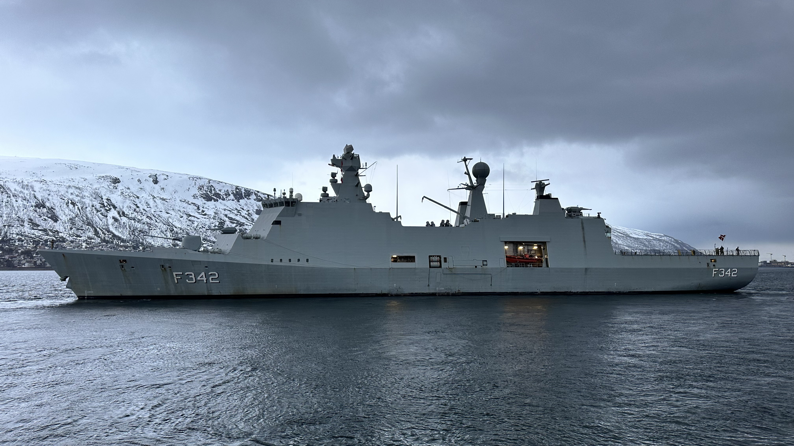
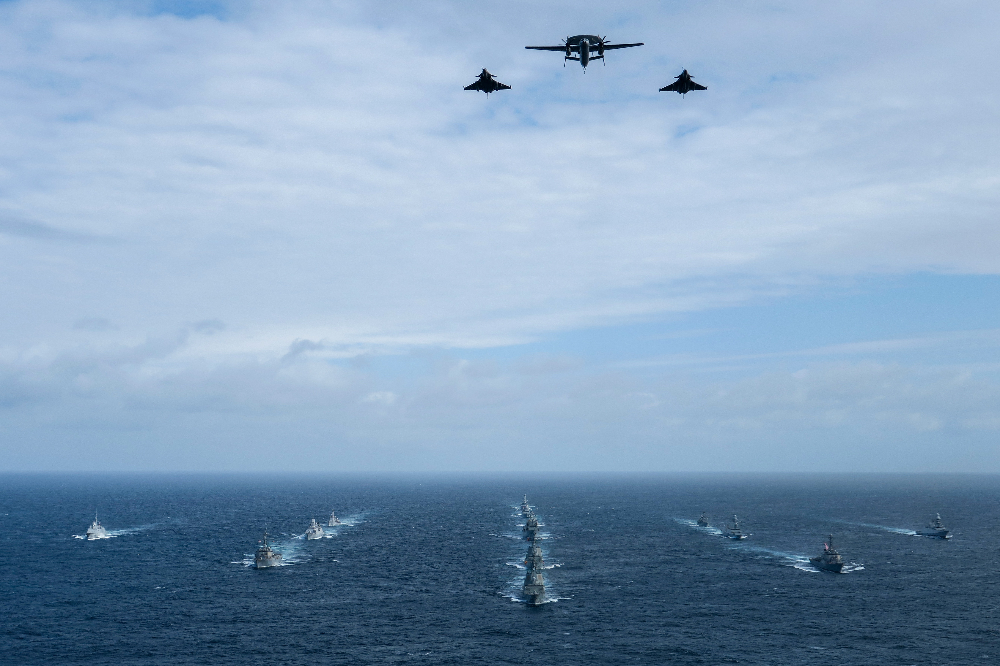

Hi, my name is Sakarias. I study Software Engineering at VIA.
I work part-time as a Junior Test Engineer at TERMA, where I mainly work with test management and automated testing.
Before starting my education, I served in the Royal Danish Navy as a CIC Operator on the frigate Esbern Snare.
Here are som pictures from my navy time (the ship and gun i shot with)


